Iluminatoare și blush-uri: cum să le alegi și să le aplici corect
Iluminatoarele și blush-urile ajută la obținerea unui machiaj al feței mai proaspăt, luminos și natural. Nuanțele alese corect evidențiază pomeții, oferă pielii un aspect sănătos și creează un look armonios atât pentru machiajul de zi, cât și pentru cel de seară.
Consultații / Programare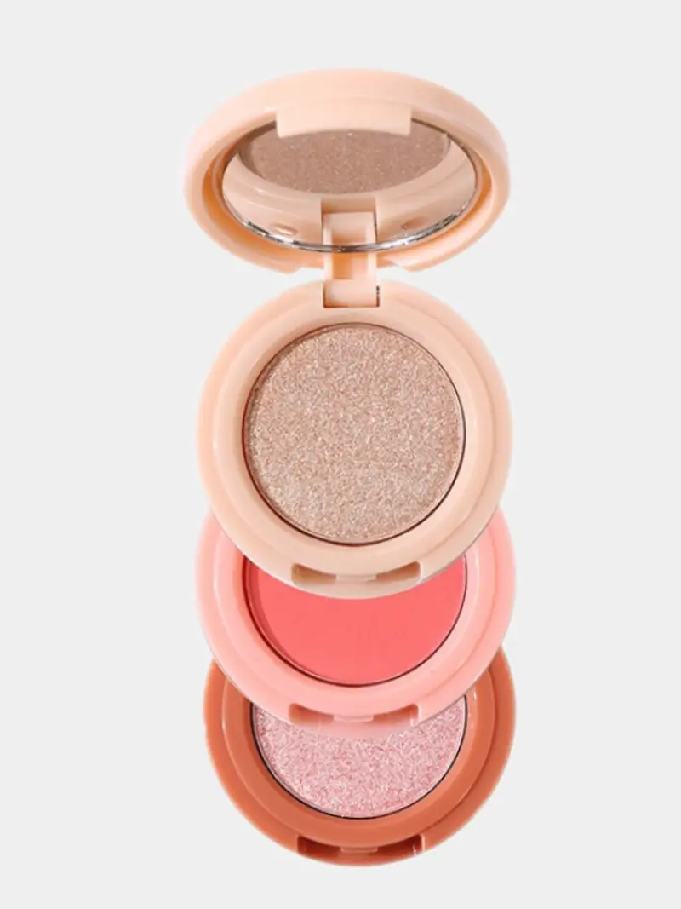
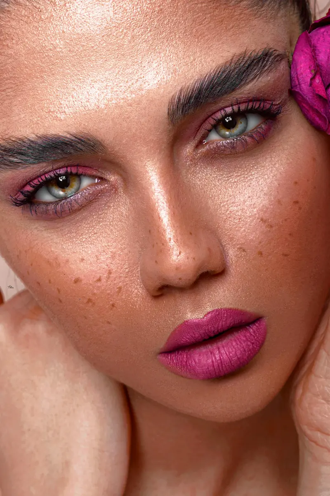
Secțiuni populare despre iluminatoare și blush-uri
Tipuri de iluminatoare și blush-uri
Texturi pudră, cremoase și lichide și caracteristicile lor.
Cum alegi nuanța potrivită
Alegerea nuanței în funcție de tonul pielii și stilul machiajului.
Tehnica de aplicare
Unde se aplică blush-ul și iluminatorul pentru un efect natural.
Cele mai bune produse
Iluminatoare și blush-uri populare de la diferite branduri.
Instrumente pentru machiaj
Pensule și accesorii pentru aplicare și estompare.
Sfaturi de la make-up artiști
Cum să obții un machiaj proaspăt și luminos.
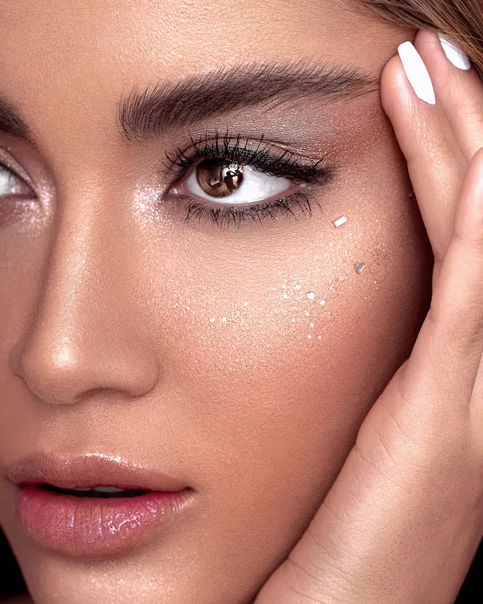
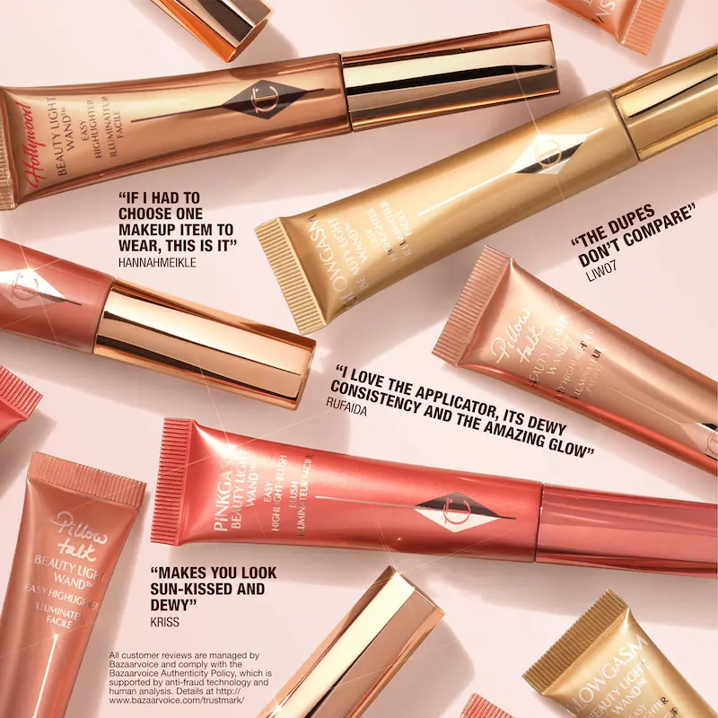
Tipuri de iluminatoare și blush-uri
Iluminatoarele și blush-urile moderne sunt disponibile în mai multe texturi, fiecare potrivită pentru un anumit tip de piele și pentru diferite tehnici de machiaj. Alegerea formatului potrivit ajută la obținerea unui rezultat mai natural și mai rezistent.
Pentru un machiaj natural, make-up artiștii combină adesea texturi diferite: de exemplu, blush cremos pentru prospețime și iluminator pudră pentru o strălucire subtilă a pomeților.
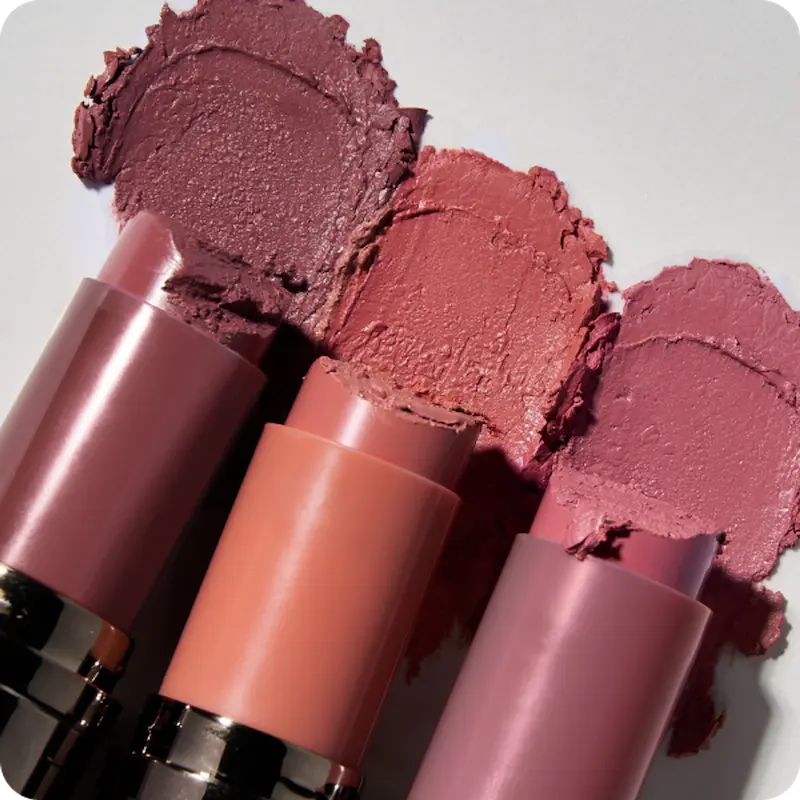
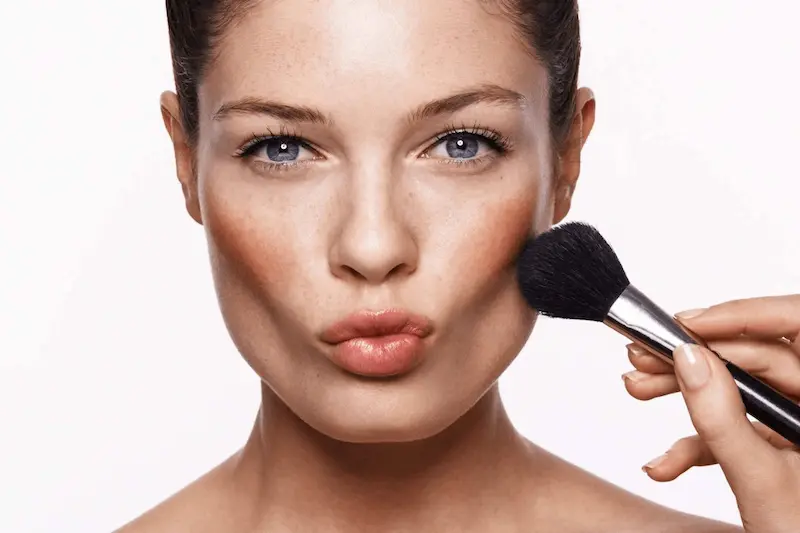
Tehnica de aplicare a iluminatorului și a blush-ului
Tehnica corectă de aplicare ajută la evidențierea trăsăturilor naturale ale feței și oferă pielii prospețime și luminozitate. Make-up artiștii recomandă aplicarea blush-ului și a iluminatorului în anumite zone ale feței pentru a crea un machiaj armonios și natural.
Pentru ca machiajul să arate cât mai natural, este important să estompați bine produsele și să folosiți pensule moi pentru față.
Ai nevoie de un machiaj profesional?
Dacă vrei să alegi nuanța perfectă sau să îți faci un machiaj profesional, apelează la un make-up artist cu experiență.
Vezi serviciile make-up artistului
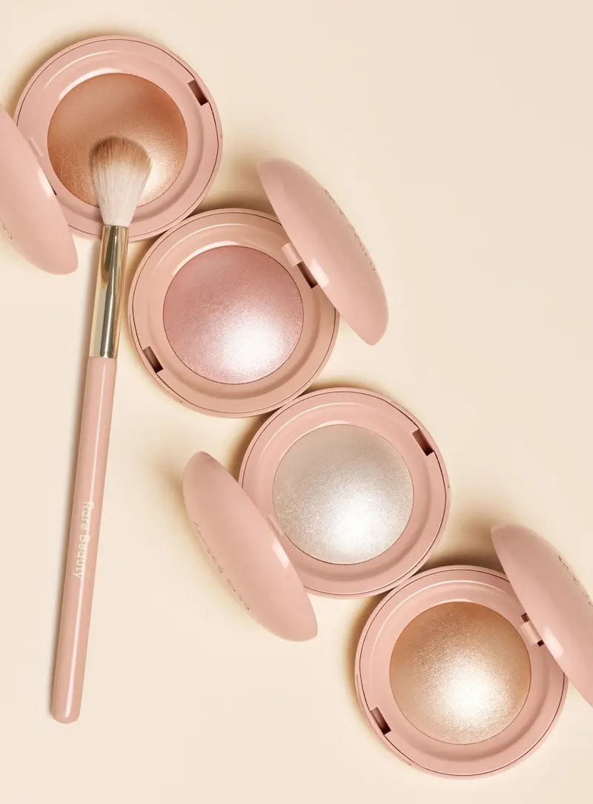
Sfaturi de la make-up artiști pentru folosirea iluminatorului și a blush-ului
Make-up artiștii profesioniști folosesc iluminatorul și blush-ul pentru a crea un machiaj al feței proaspăt, luminos și armonios. Câteva recomandări simple te pot ajuta să obții un machiaj mai natural și să evidențiezi trăsăturile frumoase ale feței.
Combinația corectă de nuanțe, texturi și tehnică de aplicare ajută la crearea unui machiaj proaspăt și luminos, potrivit atât pentru machiajul de zi, cât și pentru cel de seară.
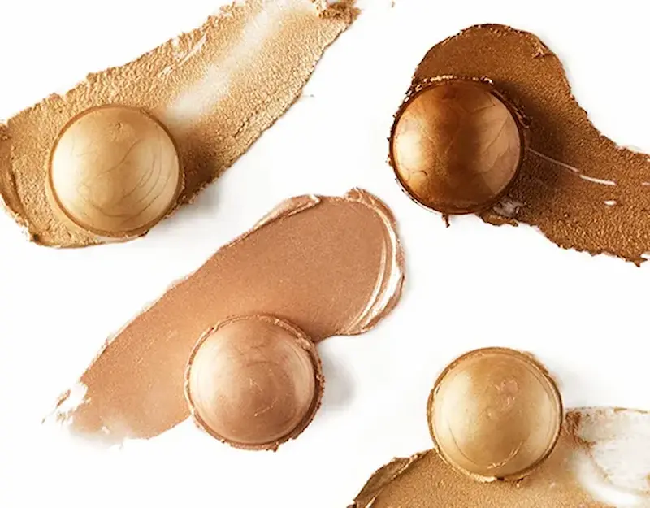
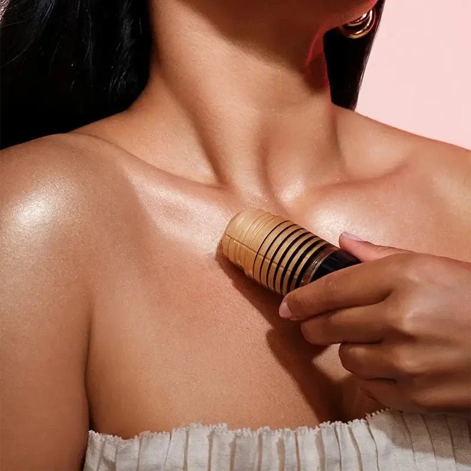
Cum alegi nuanța potrivită de iluminator și blush
Alegerea corectă a nuanței de iluminator și blush ajută la evidențierea frumuseții naturale a pielii și face machiajul mai armonios. Atunci când alegi produsele, este important să ții cont de tonul pielii, subtonul și efectul de machiaj dorit.
Dacă nu ești sigură ce nuanță să alegi, make-up artiștii recomandă să începi cu blush-uri universale în nuanțe de piersică sau roz și cu un iluminator culoarea șampaniei — acestea se potrivesc majorității tipurilor de piele.
Instrumente pentru aplicarea iluminatorului și a blush-ului
Instrumentele potrivite ajută la distribuirea uniformă a produsului și la obținerea unui rezultat natural. Make-up artiștii folosesc diferite pensule și accesorii în funcție de textura blush-ului sau a iluminatorului.
Pentru rezultate mai bune este important să cureți regulat pensulele și bureții. Instrumentele curate ajută la evitarea iritațiilor pielii și asigură o aplicare mai precisă a produselor cosmetice.
Cele mai bune iluminatoare și blush-uri
O selecție de iluminatoare și blush-uri populare pentru un machiaj luminos și natural. Aici sunt prezentate atât variante accesibile, cât și produse profesionale folosite de make-up artiști și beauty bloggeri.
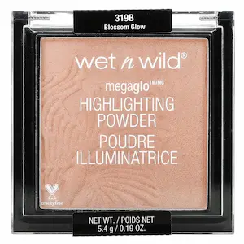
Iluminator accesibil cu strălucire intensă
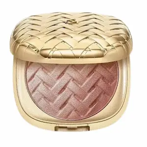
Textură baked pentru o strălucire naturală
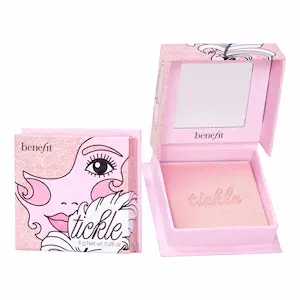
Iluminator delicat roz-auriu
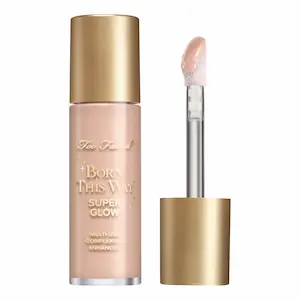
Iluminator lichid pentru efectul glow skin
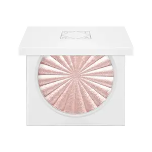
Strălucire intensă pentru machiaj profesional
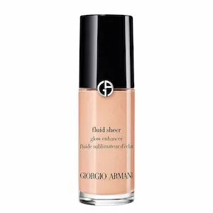
Iluminator lichid ușor, poate fi amestecat cu fond de ten
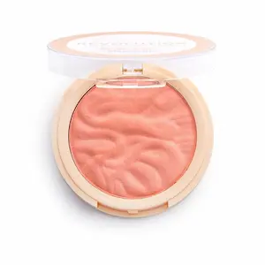
Blush bine pigmentat la preț accesibil
Blush accesibil cu textură moale

Blush ușor cu efect natural
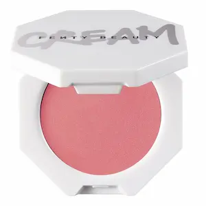
Blush intens cu rezistență mare
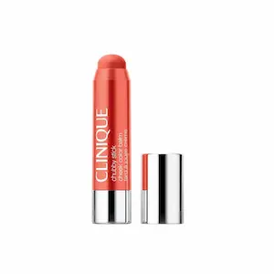
Blush cremos tip stick pentru machiaj natural
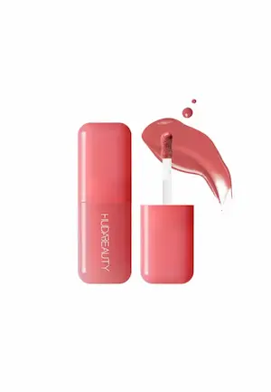
Blush lichid cu efect de piele radiantă
Greșeli frecvente la folosirea iluminatorului și blush-ului
Chiar și iluminatoarele și blush-urile de calitate pot arăta nenatural dacă sunt aplicate incorect. Mai jos sunt cele mai comune greșeli pe care oamenii le fac adesea când realizează machiajul.
Prea mult iluminator
Cantitatea excesivă face pielea prea strălucitoare și accentuează textura. Este mai bine să aplici iluminatorul în strat subțire și să intensifici treptat strălucirea.
Zona greșită pentru blush
Blush-ul aplicat prea jos sau aproape de nas poate modifica proporțiile feței. De obicei, se aplică pe „mărul obrajilor” și se estompează ușor către tâmple.
Nuanță nepotrivită
Nuanțele prea reci sau prea calde pot arăta nenatural pe piele. Este mai bine să alegi culoarea blush-ului și a iluminatorului în funcție de tonul pielii și stilul general al machiajului.
Estompare insuficientă
Liniile clare și petele apar dacă produsul nu este bine estompat. Folosește pensule moi sau bureți pentru a crea o tranziție lină între nuanțe.
Folosirea instrumentelor nepotrivite
Diferite texturi necesită instrumente diferite. Produsele pudră sunt mai ușor de aplicat cu pensula, iar cele cremoase — cu buretele sau degetele.
Întrebări frecvente despre iluminatoare și blush
Cum aleg nuanța iluminatorului?
Alege nuanța în funcție de tonul pielii: deschise pentru pielea deschisă, aurii pentru tonurile calde, piersică pentru pielea mai închisă.
Cum aleg nuanța blush-ului?
Determină culoarea după nuanța naturală a obrajilor sau efectul dorit: roz pentru prospețime, piersică pentru căldură, coral pentru pielea bronzată.
Este nevoie să folosesc pensulă pentru aplicare?
Da, pensula sau buretele permite estomparea uniformă a produsului și previne apariția petelor.
Pot combina texturile cremoase și pudră?
Da, dar aplică mai întâi produsele cremoase, apoi fixează cu cele pudră, estompând bine marginile.
Cum fac machiajul mai rezistent?
Folosește o bază pentru machiaj sau pudră ușoară înainte de a aplica blush-ul și iluminatorul pentru a crește durata de rezistență.